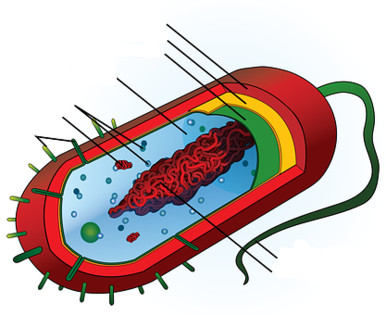

Las primeras células: procariotas
2
Vamos a conocer a las primeras células que aparecieron en la Tierra, las CÉLULAS PROCARIOTAS.
Primero vamos a ver su MORFOLOGÍA, pincha para ver el siguiente vídeo que te ayudará.

Célula procariota. via Wikimedia Commons, CC BY-SA
Partes de una célula procariota
- CÁPSULA: Pueden o no tenerla, es una envoltura protectora.
- PARED CELULAR: La tienen siempre, protege a la célula.
- MEMBRANA PLASMÁTICA: Envoltura que llevan todas las células, regula el paso de sustancias a través de ella.
- CITOPLASMA: Masa gelatinosa donde está el ADN y los ribosomas.
- RIBOSOMAS: Orgánulos que fabrican proteínas.
- MATERIAL GENÉTICO O NUCLEOIDE : Molécula de ADN CIRCULAR. Contiene la información sobre un ser vivo.
- FLAGELOS: Solo algunas, para desplazarse.
- PILOS: Sirven para unirse a otras bacterias.
A continuación, para comprobar que hemos entendido la ubicación de todos los elementos, tenemos un pequeño test en forma de juego evaluable.
{"typeGame":"Mapa","instructions":"","showMinimize":true,"showActiveAreas":false,"author":"","url":"resources/celulaEj1.jpg","authorImage":"","altImage":"","itinerary":{"showClue":false,"clueGame":"","percentageClue":40,"showCodeAccess":false,"codeAccess":"","messageCodeAccess":""},"points":[{"id":"p341856604369","title":"Flagelo","type":4,"url":"","video":"","x":0.9334389857369255,"y":0.622633495145631,"x1":0,"y1":0,"footer":"","author":"","alt":"","iVideo":0,"fVideo":0,"eText":"","iconType":11,"question":"","question_audio":"","toolTip":"","link":"","map":{"id":"a341856604369","pts":[{"id":"p298941046371","title":"","type":0,"url":"","video":"","x":0,"y":0,"x1":0,"y1":0,"footer":"","author":"","alt":"","iVideo":0,"fVideo":0,"eText":"","iconType":0,"question":"","question_audio":"","toolTip":"","link":"","map":{"id":"a298941046371","url":"","alt":"","author":"","pts":[]},"slides":[{"id":"s298941046371","title":"","url":"","author":"","alt":"","footer":""}],"activeSlide":0}],"url":"","alt":"","author":"","active":0},"slides":[{"id":"s341856604369","title":"","url":"","author":"","alt":"","footer":""}],"activeSlide":0,"audio":""},{"id":"p734806133679","title":"Nucleoide","type":4,"url":"","video":"","x":0.42630744849445323,"y":0.5891080097087379,"x1":0,"y1":0,"footer":"","author":"","alt":"","iVideo":0,"fVideo":0,"eText":"","iconType":51,"question":"","question_audio":"","toolTip":"","link":"","map":{"id":"a734806133679","pts":[{"id":"p888348941","title":"","type":0,"url":"","video":"","x":0,"y":0,"x1":0,"y1":0,"footer":"","author":"","alt":"","iVideo":0,"fVideo":0,"eText":"","iconType":0,"question":"","question_audio":"","toolTip":"","link":"","map":{"id":"a888348941","url":"","alt":"","author":"","pts":[]},"slides":[{"id":"s888348941","title":"","url":"","author":"","alt":"","footer":""}],"activeSlide":0}],"url":"","alt":"","author":"","active":0},"slides":[{"id":"s734806133679","title":"","url":"","author":"","alt":"","footer":""}],"activeSlide":0,"audio":""},{"id":"p483080543168","title":"Membrana plasmática","type":4,"url":"","video":"","x":0.694136291600634,"y":0.4947208737864078,"x1":0,"y1":0,"footer":"","author":"","alt":"","iVideo":0,"fVideo":0,"eText":"","iconType":31,"question":"","question_audio":"","toolTip":"","link":"","map":{"id":"a483080543168","pts":[{"id":"p777719568131","title":"","type":0,"url":"","video":"","x":0,"y":0,"x1":0,"y1":0,"footer":"","author":"","alt":"","iVideo":0,"fVideo":0,"eText":"","iconType":0,"question":"","question_audio":"","toolTip":"","link":"","map":{"id":"a777719568131","url":"","alt":"","author":"","pts":[]},"slides":[{"id":"s777719568131","title":"","url":"","author":"","alt":"","footer":""}],"activeSlide":0}],"url":"","alt":"","author":"","active":0},"slides":[{"id":"s483080543168","title":"","url":"","author":"","alt":"","footer":""}],"activeSlide":0,"audio":""},{"id":"p1449292425788","title":"Citoplasma","type":4,"url":"","video":"","x":0.5641838351822503,"y":0.6073422330097087,"x1":0,"y1":0,"footer":"","author":"","alt":"","iVideo":0,"fVideo":0,"eText":"","iconType":51,"question":"","question_audio":"","toolTip":"","link":"","map":{"id":"a1449292425788","pts":[{"id":"p1626442816690","title":"","type":0,"url":"","video":"","x":0,"y":0,"x1":0,"y1":0,"footer":"","author":"","alt":"","iVideo":0,"fVideo":0,"eText":"","iconType":0,"question":"","question_audio":"","toolTip":"","link":"","map":{"id":"a1626442816690","url":"","alt":"","author":"","pts":[]},"slides":[{"id":"s1626442816690","title":"","url":"","author":"","alt":"","footer":""}],"activeSlide":0}],"url":"","alt":"","author":"","active":0},"slides":[{"id":"s1449292425788","title":"","url":"","author":"","alt":"","footer":""}],"activeSlide":0,"audio":""},{"id":"p1155545998162","title":"Pared celular","type":4,"url":"","video":"","x":0.7480190174326465,"y":0.4850121359223301,"x1":0,"y1":0,"footer":"","author":"","alt":"","iVideo":0,"fVideo":0,"eText":"","iconType":51,"question":"","question_audio":"","toolTip":"","link":"","map":{"id":"a1155545998162","pts":[{"id":"p711091992061","title":"","type":0,"url":"","video":"","x":0,"y":0,"x1":0,"y1":0,"footer":"","author":"","alt":"","iVideo":0,"fVideo":0,"eText":"","iconType":0,"question":"","question_audio":"","toolTip":"","link":"","map":{"id":"a711091992061","url":"","alt":"","author":"","pts":[]},"slides":[{"id":"s711091992061","title":"","url":"","author":"","alt":"","footer":""}],"activeSlide":0}],"url":"","alt":"","author":"","active":0},"slides":[{"id":"s1155545998162","title":"","url":"","author":"","alt":"","footer":""}],"activeSlide":0,"audio":""},{"id":"p402553893854","title":"Pilos","type":4,"url":"","video":"","x":0.29160063391442154,"y":0.9626820388349514,"x1":0,"y1":0,"footer":"","author":"","alt":"","iVideo":0,"fVideo":0,"eText":"","iconType":31,"question":"","question_audio":"","toolTip":"","link":"","map":{"id":"a402553893854","pts":[{"id":"p271524488416","title":"","type":0,"url":"","video":"","x":0,"y":0,"x1":0,"y1":0,"footer":"","author":"","alt":"","iVideo":0,"fVideo":0,"eText":"","iconType":0,"question":"","question_audio":"","toolTip":"","link":"","map":{"id":"a271524488416","url":"","alt":"","author":"","pts":[]},"slides":[{"id":"s271524488416","title":"","url":"","author":"","alt":"","footer":""}],"activeSlide":0}],"url":"","alt":"","author":"","active":0},"slides":[{"id":"s402553893854","title":"","url":"","author":"","alt":"","footer":""}],"activeSlide":0,"audio":""},{"id":"p1346084681543","title":"Cápsula","type":4,"url":"","video":"","x":0.7797147385103012,"y":0.4675364077669903,"x1":0,"y1":0,"footer":"","author":"","alt":"","iVideo":0,"fVideo":0,"eText":"","iconType":51,"question":"","question_audio":"","toolTip":"","link":"","map":{"id":"a1346084681543","pts":[{"id":"p194775246987","title":"","type":0,"url":"","video":"","x":0,"y":0,"x1":0,"y1":0,"footer":"","author":"","alt":"","iVideo":0,"fVideo":0,"eText":"","iconType":0,"question":"","question_audio":"","toolTip":"","link":"","map":{"id":"a194775246987","url":"","alt":"","author":"","pts":[]},"slides":[{"id":"s194775246987","title":"","url":"","author":"","alt":"","footer":""}],"activeSlide":0}],"url":"","alt":"","author":"","active":0},"slides":[{"id":"s1346084681543","title":"","url":"","author":"","alt":"","footer":""}],"activeSlide":0,"audio":""},{"id":"p75581603530","title":"Plásmido","type":4,"url":"","video":"","x":0.3153724247226624,"y":0.5257888349514563,"x1":0,"y1":0,"footer":"","author":"","alt":"","iVideo":0,"fVideo":0,"eText":"","iconType":51,"question":"","question_audio":"","toolTip":"","link":"","map":{"id":"a75581603530","pts":[{"id":"p56040521528","title":"","type":0,"url":"","video":"","x":0,"y":0,"x1":0,"y1":0,"footer":"","author":"","alt":"","iVideo":0,"fVideo":0,"eText":"","iconType":0,"question":"","question_audio":"","toolTip":"","link":"","map":{"id":"a56040521528","url":"","alt":"","author":"","pts":[]},"slides":[{"id":"s56040521528","title":"","url":"","author":"","alt":"","footer":""}],"activeSlide":0}],"url":"","alt":"","author":"","active":0},"slides":[{"id":"s75581603530","title":"","url":"","author":"","alt":"","footer":""}],"activeSlide":0,"audio":""}],"isScorm":2,"textButtonScorm":"Guardar la puntuación","repeatActivity":true,"textAfter":"","evaluation":3,"selectsGame":[{"typeSelect":0,"numberOptions":4,"quextion":"","options":["","","",""],"solution":"","solutionWord":"","percentageShow":35,"msgError":"","msgHit":""}],"isNavigable":true,"showSolution":true,"timeShowSolution":3,"version":2,"percentajeIdentify":100,"percentajeShowQ":100,"percentajeQuestions":100,"autoShow":true,"optionsNumber":0,"msgs":{"msgSubmit":"Enviar","msgIndicateWord":"Proporcione una palabra o expresión","msgClue":"¡Genial! La pista es:","msgErrors":"Errores","msgHits":"Aciertos","msgScore":"Puntuación","msgMinimize":"Minimizar","msgMaximize":"Maximizar","msgFullScreen":"Pantalla Completa","msgNoImage":"Pregunta sin imágenes","msgSuccesses":"¡Correcto! | ¡Excelente! | ¡Genial! | ¡Muy bien! | ¡Perfecto!","msgFailures":"¡No era eso! | ¡Incorrecto! | ¡No es correcto! | ¡Lo sentimos! | ¡Error!","msgTryAgain":"Necesita al menos un %s% de respuestas correctas para conseguir la información. Vuelva a intentarlo.","msgEndGameScore":"Antes de guardar la puntuación comience la partida.","msgScoreScorm":"La puntuación no se puede guardar porque esta página no forma parte de un paquete SCORM.","msgPoint":"Punto","msgAnswer":"Responder","msgOnlySaveScore":"¡Sólo puede guardar la puntuación una vez!","msgOnlySave":"Sólo puede guardar una vez","msgInformation":"Información","msgYouScore":"Su puntuación","msgOnlySaveAuto":"Su puntuación se guardará después de cada pregunta. Sólo puede jugar una vez.","msgSaveAuto":"Su puntuación se guardará automáticamente después de cada pregunta.","msgSeveralScore":"Puede guardar la puntuación tantas veces como quiera","msgYouLastScore":"La última puntuación guardada es","msgActityComply":"Ya ha realizado esta actividad.","msgPlaySeveralTimes":"Puede realizar esta actividad cuantas veces quiera","msgClose":"Cerrar","msgPoints":"puntos","msgQuestions":"Preguntas","msgAudio":"Audio","msgAccept":"Aceptar","msgYes":"Sí","msgNo":"No","msgShowAreas":"Mostrar áreas activas","msgShowTest":"Mostrar cuestionario","msgGoActivity":"Pulsa aquí para realizar esta actividad","msgSelectAnswers":"Selecciona las opciones correctas y pulsa sobre el botón 'Responder'.","msgCheksOptions":"Marca todas las opciones en el orden adecuado y pulsa sobre el botón 'Responder'.","msgWriteAnswer":"Escribe la palabra o expresión correcta y pulsa en el botón 'Responder'.","msgIdentify":"Identificar","msgSearch":"Buscar","msgClickOn":"Pulsa sobre","msgReviewContents":"Debes repasar el %s% de los contenidos de la actividad antes de completar el cuestionario.","msgScore10":"¡Todo perfecto! ¡Enhorabuena! ¿Deseas repetir esta actividad?","msgScore4":"No has superado esta prueba. Repasa sus contenidos e inténtalo de nuevo. ¿Deseas repetir la actividad?","msgScore6":"¡Estupendo! Has superado la prueba, pero seguro que lo puedes mejorar. ¿Deseas repetir esta actividad?","msgScore8":"¡Casi perfecto! Aún lo puedes hacer mejor. ¿Deseas repetir esta actividad?","msgNotCorrect":"¡No es correcto! Has pulsado sobre","msgNotCorrect1":"¡No es correcto! Has pulsado sobre","msgNotCorrect2":"y la respuesta correcta es","msgNotCorrect3":"¡Prueba otra vez!","msgAllVisited":"¡Genial! Has visitado los puntos necesarios.","msgCompleteTest":"Puedes completar el cuestionario.","msgPlayStart":"Pulsar aquí para ver el juego","msgSubtitles":"Subtítulos","msgSelectSubtitles":"Selecciona un archivo de subtítulos. Formatos válidos:","msgNumQuestions":"Número de preguntas","msgHome":"Inicio","msgReturn":"Volver"}}
Su navegador no es compatible con esta herramienta.